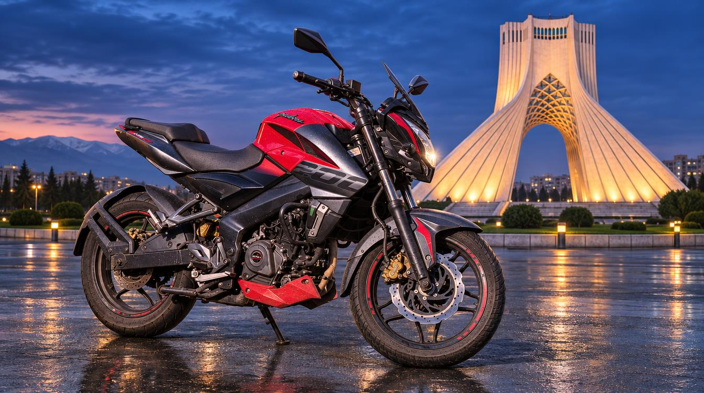
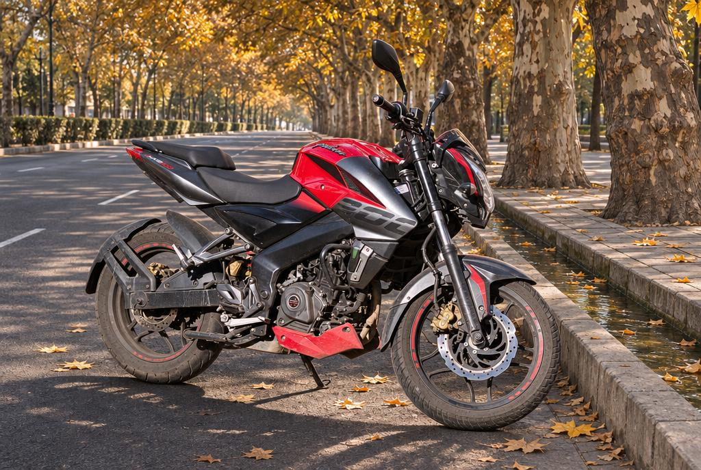
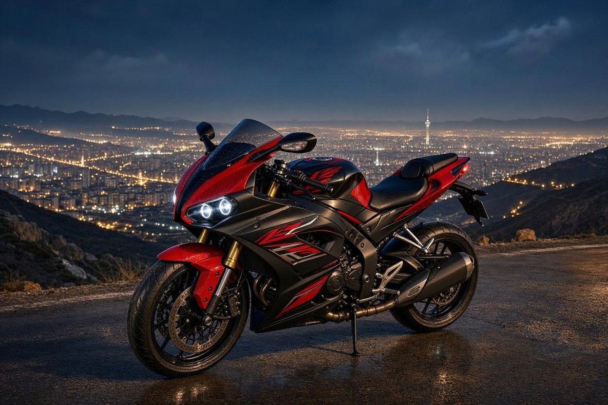
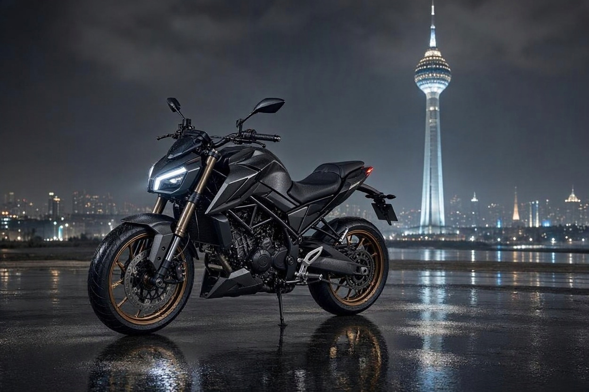
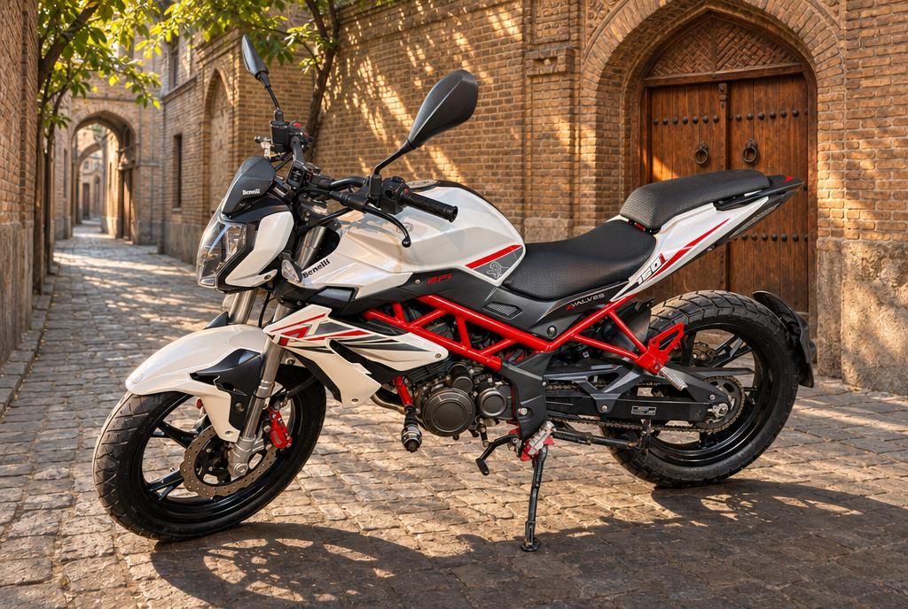
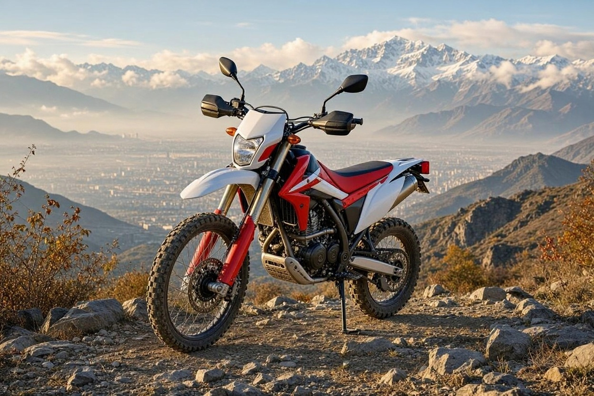
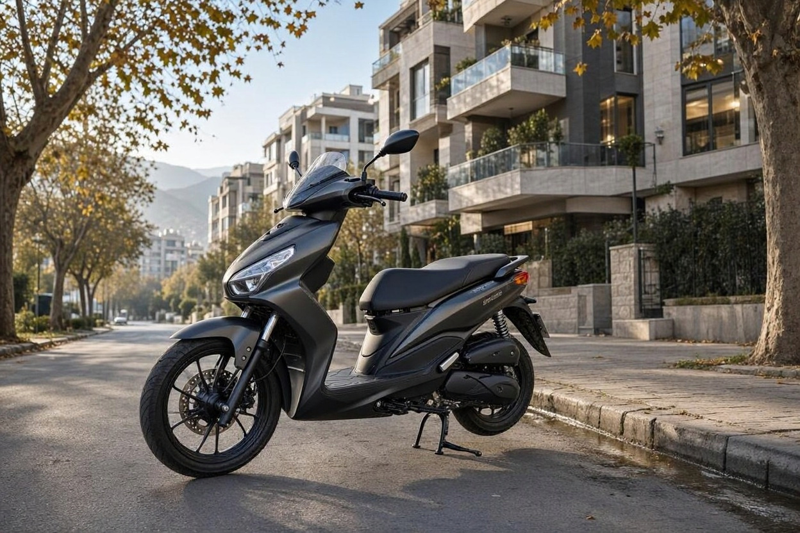
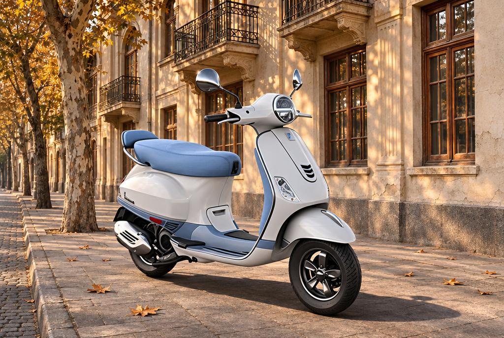
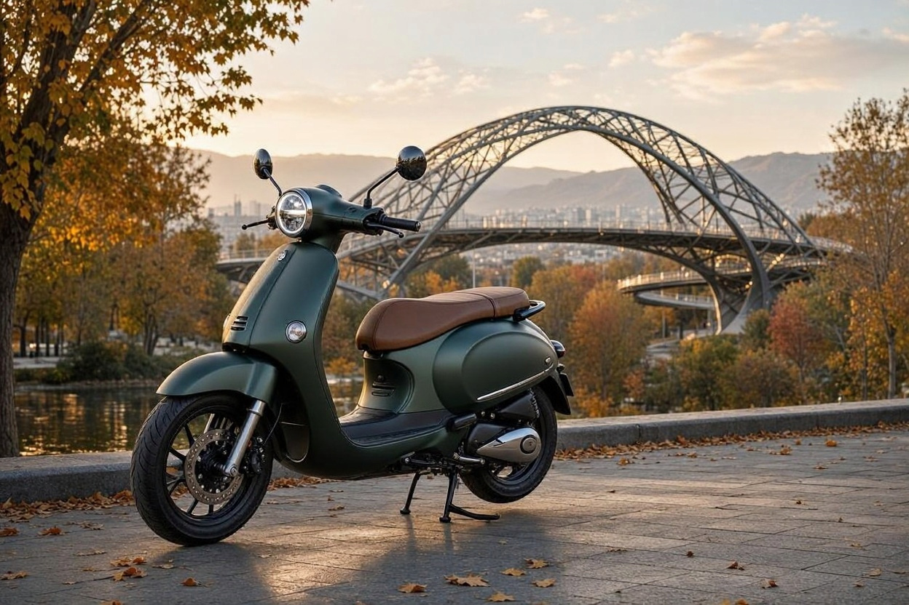

بهترین موتورسیکلت تا یک میلیارد تومان کدام است؟ راهنمای خرید پاییز ۱۴۰۵
فرض کنید یک میلیارد تومان کنار گذاشتهاید و سه تب باز دارید: یک آگهی فروش، سایت یک فروشگاه و فهرست قیمت یک مونتاژکار. همان موتور در یکی ۸۵۰ میلیون است و در دیگری یک میلیارد و دویست میلیون. سؤال اصلی فقط این نیست که کدام مدل بهتر است؛ باید بدانید کدام قیمت واقعی است.
برای پیدا کردن بهترین موتورسیکلت تا یک میلیارد تومان، ما در کارماچک قیمتهای منتشرشده مهر و آبان ۱۴۰۵ را کنار هم گذاشتیم و مدلهایی را نگه داشتیم که قیمتشان واقعاً به این بودجه میخورد. نتیجه، هشت گزینه است که هر کدام برای نوع خاصی از سواری منطقیاند.
برای بیشتر خریدارها، بهترین موتورسیکلت تا یک میلیارد تومان در آبان ۱۴۰۵ باجاج پالس NS200 است، به شرطی که نمونه صفر را زیر سقف بودجه پیدا کنید؛ آگهیها ۸۵۰ تا ۹۰۰ میلیون و بعضی فروشگاهها تا ۱٫۲ میلیارد تومان قیمت میدهند. برای رفتوآمد شهری کیمکو اجیلیتی 160S و برای بودجه کمتر سی اف موتو 250NK منطقیترند.
خلاصه در یک دقیقه
- پالس NS200 با خنککاری مایع، ترمز ABS دوکاناله و قطعات در دسترس، متعادلترین انتخاب این بودجه است.
- پالس RS200 صفر حدود ۱٫۱۵ میلیارد تومان است؛ در این بودجه باید سراغ نمونه کارکرده آن رفت.
- سی اف موتو 250NK با حدود ۷۰۰ تا ۷۵۰ میلیون تومان، ارزانترین ۲۵۰ سیسی این فهرست است.
- قیمت اعلامی بعضی مونتاژکارها اقساطی است و با قیمت نقدی بازار یکی نیست.
- اختلاف قیمت فروشندهها زیاد است؛ پیش از واریز بیعانه، قیمت همان مدل و همان سال ساخت را دوباره بپرسید.
چرا بعضی مدل های معروف در این فهرست نیستند؟
چون قیمتشان به این بودجه نمیخورد. یاماها NMAX 155 از ۱٫۲۶ میلیارد تومان شروع میشود، یاماها R15 حدود ۱٫۱۱ میلیارد و KTM Duke 200 حدود ۱٫۲ میلیارد تومان است. قیمت یاماها MT15 هم از ۷۰۰ میلیون تا ۱٫۶ میلیارد تومان ثبت شده و این اختلاف آنقدر زیاد است که نمیشود آن را گزینه مطمئن این بودجه دانست.
مقایسه هشت موتور در یک جدول
| مدل | قیمت ثبتشده (تومان) | موتور و توان اعلامی | مناسب برای |
|---|---|---|---|
| باجاج پالس NS200 | ۸۵۰ میلیون تا ۱٫۲ میلیارد، بسته به فروشنده | ۱۹۹٫۵ سیسی، ۲۴٫۵ اسب بخار | سواری همهمنظوره |
| باجاج پالس RS200 (کارکرده) | ۵۰۰ تا ۹۰۰ میلیون، بسته به سال و سلامت | ۱۹۹٫۵ سیسی، ۲۴٫۵ اسب بخار | سواری اسپرت |
| سی اف موتو 250NK | ۷۰۰ تا ۷۵۰ میلیون | ۲۵۰ سیسی، حدود ۲۷٫۵ اسب بخار | نیکد ۲۵۰ با بودجه کمتر |
| بنلی TNT 150 | ۷۲۳ تا ۷۶۱ میلیون | کلاس ۱۵۰ سیسی، توان نسخه ایران تأیید نشد | نیکد شهری خوشظاهر |
| فلات XR 250 ABS | ۹۲۴٫۵ میلیون (اقساطی) | ۲۴۹ سیسی، حدود ۱۴ اسب بخار | مسیر خاکی سبک |
| کیمکو اجیلیتی 160S | حدود ۹۰۰ میلیون | حدود ۱۶۰ سیسی، توان تأیید نشد | رفتوآمد شهری |
| وسپا VXL 150 | ۸۶۰ تا ۹۴۰ میلیون | ۱۴۹٫۵ سیسی، حدود ۱۰٫۵ اسب بخار | سواری شهری کلاسیک |
| یاماها گرند فیلانو 125 | ۷۹۳ تا ۸۰۰ میلیون | ۱۲۵ سیسی، حدود ۸ اسب بخار | مسیرهای کوتاه شهری |
چرا باجاج پالس NS200 گزینه اصلی این بودجه است؟

NS200 موتور ۱۹۹٫۵ سیسی با توان ۲۴٫۵ اسب بخار و گشتاور ۱۸٫۷۴ نیوتنمتر دارد و با گیربکس ششدنده عرضه میشود. وزن آن حدود ۱۵۸ کیلوگرم است. شتاب خوب، راحتی تعمیر و فراوانی قطعات از مهمترین مزیتهای آن هستند.
مشکل NS200 خود موتور نیست، پراکندگی قیمتش است. آگهیهای مدل ۱۴۰۵ حدود ۸۵۰ تا ۹۰۰ میلیون تومان بودهاند، اوایل آبان قیمت یک میلیارد تومان هم ثبت شده و بعضی فروشگاهها تا یک میلیارد و دویست میلیون تومان قیمت دادهاند. عدد آگهی، قیمت پیشنهادی فروشنده است و ممکن است با شرایط واقعی فرق کند.
آیا باجاج پالس RS200 هنوز در این بودجه می ارزد؟

بله، اما فقط بهصورت کارکرده. نمونه مدل ۱۴۰۵ در فروشگاهها حدود ۱٫۱۵ میلیارد تومان است. در مقابل، آگهیهای کارکرده از حدود ۵۰۰ تا ۵۸۰ میلیون تومان با سالساختهای مختلف دیده میشوند و بسته به سلامت موتور تا ۹۰۰ میلیون تومان هم میرسند.
موتور RS200 با NS200 مشترک است، اما فیرینگ کامل و ABS دوکاناله دارد و وزنش حدود ۱۶۶ کیلوگرم است. پس برای شتاب بیشتر سراغش نروید؛ مزیت اصلی آن ظاهر اسپرت و ثبات بهتر در سرعت است. نمونه کارکرده یک موتور اسپرت ممکن است سواری تند داشته باشد، پس بررسی سابقه تصادف و سلامت شاسی در این مدل اهمیت بیشتری دارد.
سی اف موتو 250NK برای چه کسانی خرید خوبی است؟

اگر حجم موتور و ظاهر مدرن برایتان مهم است و میخواهید بخشی از بودجه بماند، 250NK انتخاب منطقیای است. قیمت آن حدود ۷۰۰ تا ۷۵۰ میلیون تومان ثبت شده است؛ این عدد مربوط به شهریور است، پس قیمت آبان این مدل را جداگانه بپرسید.
این مدل حدود ۲۷٫۵ اسب بخار توان، ۲۲ نیوتنمتر گشتاور و ۱۵۱ کیلوگرم وزن دارد. نمایشگر TFT و ترمز خوب از نقاط قوت آن است. نقطه ضعف مهمش بازار فروش مجدد است که از یاماها و باجاج ضعیفتر است؛ یعنی روز فروش ممکن است مشتری دیرتر پیدا شود.
بنلی TNT 150 ارزش خرید دارد؟

بنلی TNT 150 برای کسی مناسب است که ظاهر نیکد بزرگ و صدای اگزوز برایش اهمیت دارد و بیشتر در شهر میراند. قیمت آن در بازار حدود ۷۲۳ میلیون تومان و نسخه نیوفیس حدود ۷۶۱ میلیون تومان است. وزن آن حدود ۱۳۴ کیلوگرم است.
هزینه نگهداری این موتور از رقبا بالاتر و طراحیاش قدیمیتر است. برای توان نسخه ایرانی عدد قابلاتکایی پیدا نکردیم، پس عدد قطعی نمینویسیم. با ۱۵۰ سیسی، از این موتور عملکرد کلاس ۲۰۰ سیسی انتظار نداشته باشید.
موتور کارکرده را قبل از معامله بررسی کنید
اگر گزینه شما کارکرده است، وضعیت شاسی، موتور، ترمز و مدارک را پیش از پرداخت بیعانه مشخص کنید تا قیمت پیشنهادی را با آگاهی بیشتری بررسی کنید.
جزئیات کارشناسی موتورسیکلتفلات XR 250 ABS برای مسیر خاکی کافی است؟

برای مسیر خاکی سبک و جادههای فرعی، بله. قیمت نسخه ABS در آبان ۹۲۴٫۵ میلیون تومان و نسخه بدون ABS ۹۰۵٫۷ میلیون تومان است. این قیمتها اقساطیاند، پس پیشپرداخت و تعداد اقساط را جداگانه بپرسید.
نکتهای که خیلی از خریدارها نادیده میگیرند این است که ۲۴۹ سیسی بودن این موتور به معنای قدرت یک موتور اسپرت ۲۵۰ نیست. توان اعلامی آن ۱۰٫۶ کیلووات، یعنی حدود ۱۴ اسب بخار، و گشتاورش ۱۳٫۳ نیوتنمتر است؛ وزن هم حدود ۱۳۷ کیلوگرم است. این موتور برای آرام رفتن و دوام در مسیر ناهموار طراحی شده، نه برای بزرگراه.
کیمکو اجیلیتی 160S بهترین اسکوتر این بودجه است؟

برای رفتوآمد روزانه، از منطقیترین انتخابهاست. قیمت آن در بازار حدود ۹۰۰ میلیون تومان است و نوسانش از بیشتر مدلهای این فهرست کمتر بوده است. موتور حدود ۱۶۰ سیسی با گیربکس CVT و چرخ جلوی ۱۶ اینچی دارد.
عدد توان و وجود ABS را برای نسخه موجود در ایران تأیید نکردیم، پس هنگام خرید هر دو را از فروشنده بپرسید. اگر هر روز از خیابانهای پرترافیک رد میشوید، چرخ بزرگتر جلو نسبت به اسکوترهای چرخکوچک احساس پایدارتری میدهد.
وسپا VXL 150 چه زمانی انتخاب درستی است؟

وقتی طراحی و حس استفاده از یک اسکوتر کلاسیک برایتان از شتاب مهمتر باشد. قیمت آن در مهر حدود ۸۶۰ میلیون و در آبان حدود ۹۴۰ میلیون تومان بوده است. این موتور ۱۴۹٫۵ سیسی با توان حدود ۱۰٫۵ اسب بخار، گیربکس CVT و وزن حدود ۱۱۵ کیلوگرم است.
احتمال دارد تولید این مدل در سال ۲۰۲۶ متوقف شده باشد، پس موجودی و سال ساخت نمونهای را که میخرید دقیق بپرسید. درباره هزینه قطعات هم داده تأییدشدهای نداریم؛ قبل از معامله قیمت چند قطعه پرمصرف را استعلام کنید.
یاماها گرند فیلانو 125 برای چه سواری مناسب است؟

گرند فیلانو برای مسیرهای کوتاه شهری و کسی که اسکوتر سبک و خوشطرح میخواهد مناسب است. قیمت آن در بازار حدود ۷۹۳ تا ۸۰۰ میلیون تومان است، اما یک نسخه با عنوان KLS حدود یک میلیارد و ۸۱ میلیون تومان قیمت دارد. نام نسخه را حتماً پیش از مقایسه قیمت بپرسید.
این اسکوتر موتور ۱۲۵ سیسی، حدود ۸ اسب بخار توان و حدود ۱۰۰ کیلوگرم وزن دارد. سربالاییهای شمال تهران با دو سرنشین برای چنین موتوری سخت است؛ اگر مسیرتان اینطور است، اسکوتر حجم بالاتر را انتخاب کنید.
کدام موتور برای شما مناسب است؟
- یک موتور برای همه کار: باجاج پالس NS200، با پیدا کردن نمونه زیر سقف بودجه.
- هر روز در ترافیک شهر: کیمکو اجیلیتی 160S.
- موتور ۲۵۰ سیسی و باقی ماندن بخشی از بودجه: سی اف موتو 250NK.
- ظاهر اسپرت با بودجه کارکرده: باجاج پالس RS200، بعد از بررسی شاسی.
- مسیر خاکی و جاده فرعی: فلات XR 250 ABS.
- طراحی کلاسیک: وسپا VXL 150 یا یاماها گرند فیلانو 125.
کل یک میلیارد را برای خود موتور خرج نکنید. بیمه، هزینه انتقال سند، کلاه استاندارد و دستکش هم بخشی از خرید هستند و در قیمتهای بالا حساب نشدهاند.
موتور کارکرده را قبل از خرید چطور بررسی کنیم؟
بودجه یک میلیارد تومانی بهخصوص در مدلهای اسپرت، خیلی وقتها به بازار کارکرده میرسد. در این حالت ظاهر تمیز چیز زیادی را ثابت نمیکند، چون تعویض فیرینگ و قاب ساده است و ردّ ضربه را پنهان میکند.
- مدارک:شماره تنه و موتور را با سند و کارت تطبیق دهید و وضعیت خلافی و بیمه را بپرسید.
- شاسی و فرمان:جوش غیرعادی، ترک رنگ کنار گلویی فرمان و کجبودن کمکهای جلو میتوانند نشانه ضربه باشند.
- موتور سرد:موتور را سرد روشن کنید و به دود، صدای غیرعادی و نشتی روغن یا مایع خنککننده دقت کنید.
- ترمز و ABS:چراغ ABS باید پس از روشن شدن طبق رفتار عادی خاموش شود؛ روشن ماندن آن نیاز به بررسی دارد.
- تست سواری:لرزش فرمان، کشیدن موتور به یک سمت و عملکرد کلاچ و دنده را با سرعت کم بسنجید.
هیچکدام از این نشانهها بهتنهایی برای تشخیص قطعی تصادف کافی نیستند. اگر برای خرید کارکرده مصمم هستید، کارشناسی موتورسیکلت پیش از خرید کمک میکند ایراد احتمالی و اثرش روی قیمت معامله روشن شود. کارماچک خدمات کارشناسی و بررسی وسیله نقلیه را در ایران ارائه میدهد.
جمع بندی: بهترین موتورسیکلت تا یک میلیارد تومان
اگر فقط یک پیشنهاد بخواهید، باجاج پالس NS200 است؛ به شرطی که نمونه صفر را با قیمت مشخص و زیر سقف بودجه پیدا کنید. اگر فروشندهها بالای یک میلیارد قیمت دادند، سی اف موتو 250NK یا برای شهر کیمکو اجیلیتی 160S جایگزینهای معقولیاند. روز خرید، قیمت نقدی را جدا از اقساطی بپرسید و سال ساخت را در فاکتور ثبت کنید.
پیش از خرید موتور کارکرده، نظر کارشناس را بگیرید
بررسی شاسی، موتور، ترمز و مدارک، کمک میکند با اطلاعات کاملتری درباره خرید و قیمت تصمیم بگیرید.
درخواست کارشناسی موتورسیکلتسؤالات متداول
با یک میلیارد تومان چه موتوری بخرم؟
با یک میلیارد تومان در آبان ۱۴۰۵ میتوانید باجاج پالس NS200 نو را از فروشندههایی که زیر این قیمت میدهند، سی اف موتو 250NK، یا اسکوترهایی مثل کیمکو اجیلیتی 160S و وسپا VXL 150 بخرید. انتخاب نهایی به مسیر روزانه، نیاز به سرعت جادهای و هزینه نگهداری بستگی دارد.
چرا قیمت یک موتور در سایت های مختلف این قدر فرق دارد؟
قیمت مونتاژکار، آگهی فروشنده و قیمت فروشگاه با هم فرق دارند. سال ساخت، داشتن ABS، فروش نقدی یا اقساطی و موجودی هم عدد را تغییر میدهند. برای مقایسه درست، همان مدل، همان سال ساخت و همان شرایط پرداخت را کنار هم بگذارید و تاریخ قیمت را هم ببینید.
موتور صفر بخرم یا کارکرده؟
اگر مدل موردنظر شما با قیمت صفر در بودجه جا میگیرد، صفر ریسک پنهان کمتری دارد. نمونه کارکرده به شما امکان خرید کلاس بالاتر میدهد، مثل پالس RS200، اما نیازمند بررسی شاسی و سابقه موتور است. تفاوت قیمت باید آنقدر باشد که هزینه تعمیرات احتمالی را هم پوشش دهد.
برای رفت و آمد در تهران موتور دنده ای بهتر است یا اسکوتر؟
برای ترافیک سنگین و مسیرهای توقف و حرکت، اسکوتر با گیربکس CVT کمدردسرتر است و فضای بیشتری هم برای وسایل دارد. موتور دندهای مثل پالس NS200 در بزرگراه و سربالایی کنترل و توان بیشتری میدهد. اگر هر دو را تجربه نکردهاید، پیش از خرید هر کدام را کوتاه امتحان کنید.
آیا قیمت اعلامی فلات XR 250 قیمت نقدی است؟
نه. این قیمت در آبان ۱۴۰۵ عمدتاً با شرایط اقساطی منتشر شده و پیشپرداخت و تعداد اقساط در آن مشخص نیست. برای همین نباید آن را مستقیماً با قیمت نقدی آگهیها مقایسه کرد. پیش از تصمیم، قیمت نهایی و کل مبلغ پرداختی را از نمایندگی بهصورت مکتوب بگیرید.
موتور ABS دار ارزش پرداخت اضافه را دارد؟
برای بیشتر سوارها بله، بهخصوص در خیابانهای شهری و آسفالت خیس که احتمال قفل شدن چرخ بیشتر است. ABS فاصله مطمئن و مهارت ترمزگیری را جایگزین نمیکند، اما کنترل موتور را هنگام ترمز ناگهانی سادهتر میکند. در فلات XR 250، اختلاف نسخه ABS و معمولی حدود ۱۹ میلیون تومان است.